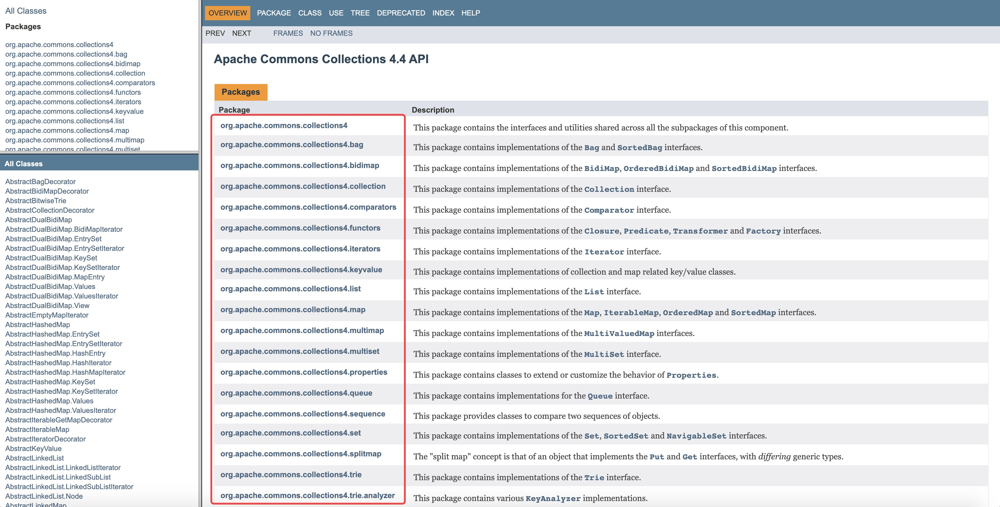

概述 commons-collections4 是一款处理集合的工具，封装了很多操作集合的方法，可以大大简化我们处理集合的代码。从 commons-collections4 的官方使用文档可以看出，它主要分为工具类、集合类、行迭代器、属性类、比较器、队列等。
官网地址：http://commons.apache.org/proper/commons-collections/
下载：http://commons.apache.org/proper/commons-collections/download_collections.cgi
官方测试案例源码：https://github.com/apache/commons-collections/blob/master/src/test/java/org/apache/commons/collections4/CollectionUtilsTest.java

常用方法 addAll、addIgnoreNulladdAll：将所有元素添加到给定的集合中。
addIgnoreNull：添加忽略为 null 的元素。
1 2 3 4 5 addAll(Collection<C> collection, C... elements) addAll(Collection<C> collection, Enumeration<? extends C> enumeration) addAll(Collection<C> collection, Iterable<? extends C> iterable) addAll(Collection<C> collection, Iterator<? extends C> iterator) addIgnoreNull(Collection<T> collection, T object)
例：
1 2 3 4 5 6 7 8 9 10 11 12 13 14 15 16 17 18 19 20 21 22 23 @Test public void addAllAndIgnoreNull () List<Integer> list = Lists.newArrayList(1 , 2 , 3 , 4 , 5 , 6 , 7 , 8 , 9 ); List<Integer> list2 = Lists.newArrayList(11 ); boolean addAll = CollectionUtils.addAll(list, list2); System.out.println(addAll); list.forEach(System.out::println); System.out.println(); boolean addIgnoreNull = CollectionUtils.addIgnoreNull(list, null ); System.out.println(addIgnoreNull); list.forEach(System.out::println); }
collatecollate：将两个已排序的集合 a 和 b 合并为一个已排序的列表，以便保留元素的自然顺序（或者以便保留根据 Comparator c 的元素顺序）。
1 2 3 4 collate(Iterable<? extends O> a, Iterable<? extends O> b) collate(Iterable<? extends O> a, Iterable<? extends O> b, boolean includeDuplicates) collate(Iterable<? extends O> a, Iterable<? extends O> b, Comparator<? super O> c) collate(Iterable<? extends O> a, Iterable<? extends O> b, Comparator<? super O> c, boolean includeDuplicates)
例：
1 2 3 4 5 6 7 8 9 10 11 12 13 14 15 16 17 18 19 20 21 22 23 24 25 @Test public void callate () List<Integer> list = Lists.newArrayList(7 , 3 , 5 , 8 ); List<Integer> list2 = Lists.newArrayList(8 , 7 , 6 , 9 ); List<Integer> combinedList = new ArrayList<>(); combinedList.addAll(list); combinedList.addAll(list2); Collections.sort(combinedList); System.out.println("combinedList：" + combinedList); Collections.reverse(combinedList); System.out.println("combinedList reverse：" + combinedList); List<Integer> collate = CollectionUtils.collate(list, list2, true ); System.out.println("collate：" + collate); }
containsAll、containsAnycontainsAll(a,b)：集合 b 中的全部元素是否都包含在集合 a 中。
containsAny(a,b)：集合 b 中是否至少有一个元素包含在集合 a 中。
1 2 3 containsAll(Collection<?> coll1, Collection<?> coll2) containsAny(Collection<?> coll1, Collection<?> coll2) containsAny(Collection<?> coll1, T... coll2)
例：
1 2 3 4 5 6 7 8 9 10 11 12 13 14 15 16 17 18 19 20 @Test public void containsAllOrAny () List<Integer> list = Lists.newArrayList(7 , 6 , 3 , 5 , 8 ); List<Integer> list2 = Lists.newArrayList(8 , 7 , 6 , 9 ); List<Integer> list3 = Lists.newArrayList(8 , 4 , 0 ); boolean containsAll = CollectionUtils.containsAll(list, list2); System.out.println(containsAll); System.out.println(); boolean containsAny = CollectionUtils.containsAny(list, list3); System.out.println(containsAny); }
intersection、disjunction、union、subtractintersection：交集。
union：并集。
disjunction：交集的补集（析取）。
subtract：差集。
1 2 3 4 5 intersection(Iterable<? extends O> a, Iterable<? extends O> b) union(Iterable<? extends O> a, Iterable<? extends O> b) disjunction(Iterable<? extends O> a, Iterable<? extends O> b) subtract(Iterable<? extends O> a, Iterable<? extends O> b) subtract(Iterable<? extends O> a, Iterable<? extends O> b, Predicate<O> p)
例一：
1 2 3 4 5 6 7 8 9 10 11 12 13 14 15 16 17 18 19 20 21 22 23 24 25 26 27 28 29 30 @Test public void disjunction () List<Integer> list = Lists.newArrayList(1 , 2 , 4 , 5 , 6 ); List<Integer> list2 = Lists.newArrayList(1 , 2 , 7 ); Collection<Integer> intersection = CollectionUtils.intersection(list, list2); System.out.println("intersection：" + intersection); Collection<Integer> union = CollectionUtils.union(list, list2); System.out.println("union：" + union); Collection<Integer> disjunction = CollectionUtils.disjunction(list, list2); System.out.println("disjunction：" + disjunction); Collection<Integer> subtract = CollectionUtils.subtract(list, list2); System.out.println("subtract：" + subtract); Collection<Integer> subtract2 = CollectionUtils.subtract(list2, list); System.out.println("subtract2：" + subtract2); }
例二： List 自带方法：
1 2 3 4 5 6 7 8 9 10 11 12 13 14 15 16 17 18 19 20 21 22 23 24 25 26 @Test public void t () String[] arrayA = new String[]{"1" , "2" , "3" , "4" }; String[] arrayB = new String[]{"3" , "4" , "5" , "6" }; List<String> listA = Arrays.asList(arrayA); List<String> listB = Arrays.asList(arrayB); List<String> jiaoList = new ArrayList<>(listA); jiaoList.retainAll(listB); System.out.println(jiaoList); List<String> chaList = new ArrayList<>(listA); chaList.removeAll(listB); System.out.println(chaList); List<String> bingList = new ArrayList<>(listA); bingList.removeAll(listB); bingList.addAll(listB); System.out.println(bingList); }
注意 :
intersection 和 retainAll 的差别：要注意的是它们的返回类型是不一样的，intersection 返回的是一个新的 List 集合，而 retainAll 返回是 Bollean 类型那就说明 retainAll 方法是对原有集合进行处理再返回原有集合,会改变原有集合中的内容。
性能方面（个人观点）：
从性能角度来考虑的话，List 自带会高点，因为它不用再创建新的集合。
需要注意的是：因为 retainAll 因为会改变原有集合，所以该集合需要多次使用就不适合用 retainAll。
Arrays.asList 将数组转集合不能进行 add 和 remove 操作，原因：
调用 Arrays.asList() 生产的 List 的 add、remove 方法时报异常，这是由 Arrays.asList() 返回的是 Arrays 的内部类 ArrayList，而不是 java.util.ArrayList。
Arrays 的内部类 ArrayList 和 java.util.ArrayList 都是继承 AbstractList，remove、add 等方法 AbstractList 中是默认 throw UnsupportedOperationException 而且不作任何操作。java.util.ArrayList 重写了这些方法而 Arrays 的内部类 ArrayList 没有重新，所以会抛出异常。
所以正确做法如下：
1 2 3 4 String[] array = {"1" ,"2" ,"3" ,"4" ,"5" }; List<String> list = Arrays.asList(array); List arrList = new ArrayList(list); arrList.add("6" );
例三：
1 2 3 4 5 6 7 8 9 10 11 12 13 14 15 16 17 18 19 20 21 22 23 24 25 26 27 28 29 30 31 @Test public void t2 () String[] arrayA = new String[]{"1" , "2" , "3" , "4" }; String[] arrayB = new String[]{"3" , "4" , "5" , "6" }; List<String> listA = Arrays.asList(arrayA); List<String> listB = Arrays.asList(arrayB); List<String> intersection = listA.stream().filter(listB::contains).collect(Collectors.toList()); System.out.println(intersection); List<String> reduceList = listA.stream().filter(item -> !listB.contains(item)).collect(Collectors.toList()); System.out.println(reduceList); List<String> listAll = listA.parallelStream().collect(Collectors.toList()); List<String> listAll2 = listB.parallelStream().collect(Collectors.toList()); listAll.addAll(listAll2); System.out.println(listAll); List<String> list = new ArrayList<>(listA); list.addAll(listB); List<String> listAllDistinct = list.stream().distinct().collect(Collectors.toList()); System.out.println(listAllDistinct); }
emptyCollection 和 emptyIfNullemptyCollection：返回具有泛型类型安全性的不可变空集合。
emptyIfNull：如果参数为null，则返回一个不变的空集合，否则返回参数本身。
1 2 emptyCollection() emptyIfNull(Collection<T> collection)
例：
1 2 3 4 5 6 7 8 9 10 11 12 13 14 15 16 17 @Test public void emptyCollectionOrIfNull () Collection<Object> collection = CollectionUtils.emptyCollection(); System.out.println(collection); Collection<Object> collection2 = CollectionUtils.emptyIfNull(Arrays.asList(new int []{3 , 4 })); System.out.println(collection2); Collection<Object> collection3 = CollectionUtils.emptyIfNull(null ); System.out.println(collection3); }
isEmpty、isNotEmptyisEmpty：空安全检查指定的集合是否为空。
isNotEmpty：空安全检查指定的集合是否不为空。
1 2 isEmpty (Collection<?> coll) isNotEmpty (Collection<?> coll)
例：
1 2 3 4 5 6 7 8 9 10 11 12 13 14 15 16 @Test public void emptyOrNot () List<Integer> list = Lists.newArrayList(2 , 3 , 4 ); boolean empty = CollectionUtils.isEmpty(list); System.out.println(empty); boolean notEmpty = CollectionUtils.isNotEmpty(list); System.out.println(notEmpty); }
removeAllremoveAll：从一个集合中，移除另一个集合。（同差集）
retainAll：从一个集合中保留下，和另一个集合相同的集合。（同交集）
1 2 3 4 removeAll(Collection<E> collection, Collection<?> remove) removeAll(Iterable<E> collection, Iterable<? extends E> remove, Equator<? super E> equator) retainAll(Collection<C> collection, Collection<?> retain) retainAll(Iterable<E> collection, Iterable<? extends E> retain, Equator<? super E> equator)
例：
1 2 3 4 5 6 7 8 9 10 11 12 13 14 15 16 17 18 19 20 21 @Test public void removeAll () List<Integer> list = Lists.newArrayList(1 , 2 , 4 , 5 , 6 ); List<Integer> list2 = Lists.newArrayList(1 , 2 , 7 ); Collection<Integer> removeAll = CollectionUtils.removeAll(list, list2); System.out.println("removeAll：" + removeAll); Collection<Integer> removeAll2 = CollectionUtils.removeAll(list2, list); System.out.println("removeAll2：" + removeAll2); Collection<Integer> retainAll = CollectionUtils.retainAll(list, list2); System.out.println("retainAll：" + retainAll); }
reverseArrayreverseArray：反转给定数组的顺序。
1 reverseArray(Object[] array)
例：
1 2 3 4 5 6 7 8 9 10 11 12 13 14 15 16 @Test public void reverseArray () List<Integer> list = Lists.newArrayList(1 , 2 , 4 , 5 , 6 ); Integer[] integers = list.toArray(new Integer[]{}); CollectionUtils.reverseArray(integers); System.out.println(Arrays.asList(integers)); String[] array = new String[]{"1" , "2" , "3" , "4" }; CollectionUtils.reverseArray(array); System.out.println(Arrays.asList(array)); }
If you like this blog or find it useful for you, you are welcome to comment on it. You are also welcome to share this blog, so that more people can participate in it. If the images used in the blog infringe your copyright, please contact the author to delete them. Thank you !